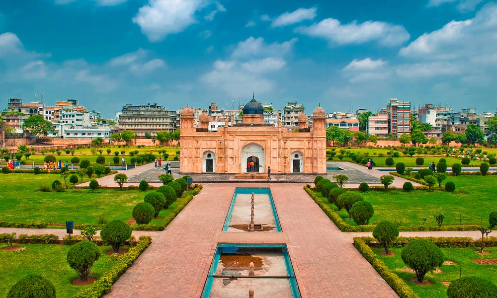
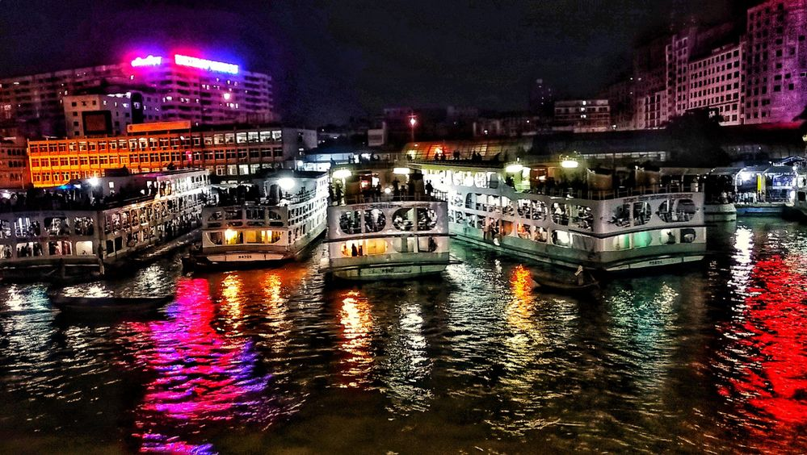
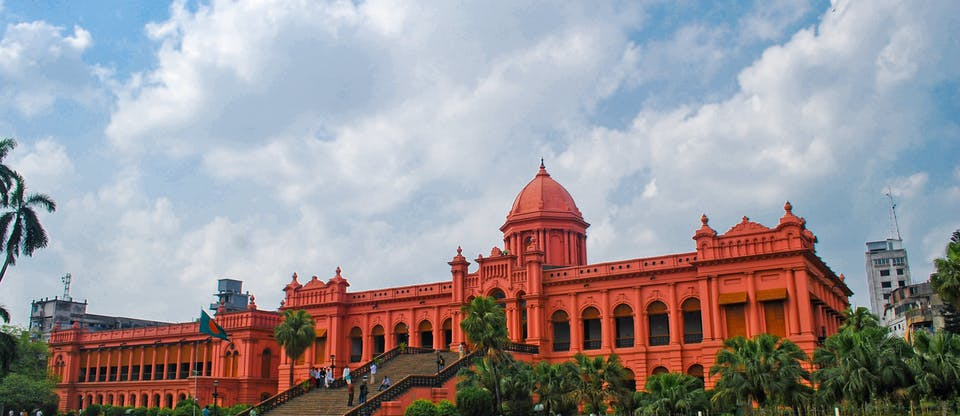
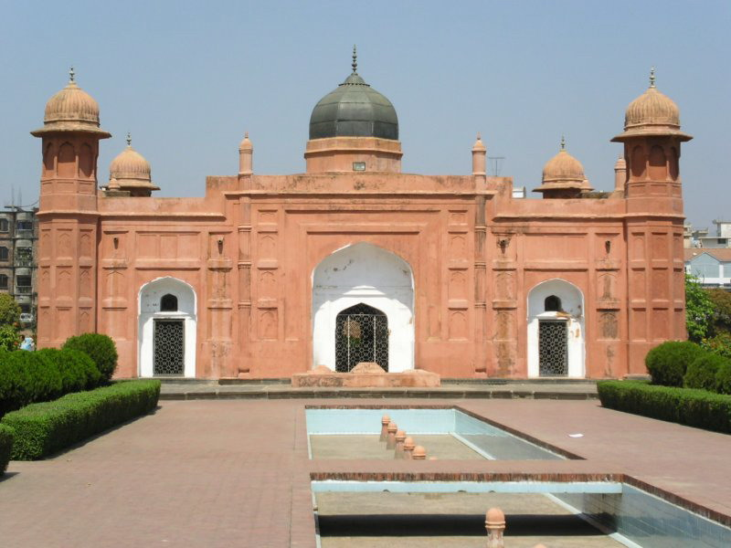

Dhaka
Dhaka City only for $450
A heady blend of ancient and modern on almost every corner, friendly locals, and a wealth of historical monuments - there are lots of great reasons to plan your trip to Dhaka.Here are some list of place to visit in Dhaka
- Sadarghat 
- Dhakeshwari Temple
- Ahsan Manzil 
- Lalbagh Fort Masjid 
- Sonargaon
Sadarghat is one of the largest river ports in the world and it's a constant stream of activity. Marvel at day-to-day life on the banks of the Buriganga River, or take one of the small boats to the center of the river to enjoy a few moments of peace and calm.

An essential stop on any visit to Dhaka, the 1,200-year-old temple is the center of Hindu religion in the region and known for its beautiful architecture.
The spectacular 'pink palace' was the summer home of Sheikh Enayet Ullah during the Mughal period and a French trading house in the 18th century.
Dhaka's most spectacular building isn't a religious structure. Instead, it's Lalbagh Masjid - a fort that was partially erected by the area's Mughal rulers in the late 17th century before being deemed unlucky and abandoned for centuries. Nowadays, the defensive motive has gone, and the fort is an oasis of beautifully tended gardens and restored architecture. If you can get to the site near daybreak or sunset, the rose red stone used to build the fort glimmers beautifully in the light. And don't miss the Diwan, with its impressive collection of Mughal paintings.

Sonargaon is located near the old course of the Brahmaputra River. To the north of Sonargaon are the Wari-Bateshwar ruins, which archaeologists have considered to be the emporium (trading colony) of Sounagoura mentioned by Greco-Roman writers.
Book Now
Package will cover hotel cost,meals and selected destinantion travel expense. This package is for 3 nights and 4 days.